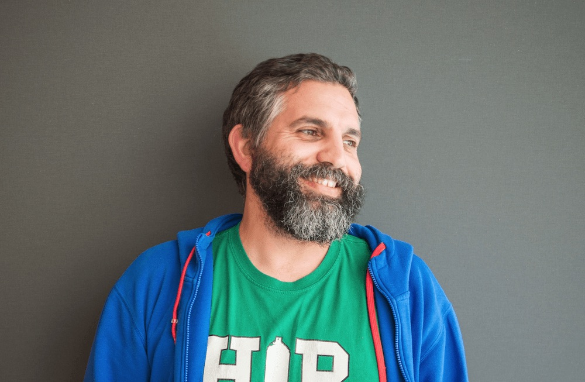

Comunidad Arduino Guatemala
¡Gracias por hacer de este un día increíble! Talleres, charlas y ponentes internacionales que llenaron la Universidad Galileo. Cuéntanos tu experiencia en la encuesta.

David Cuartielles es ingeniero de sistemas embebidos y co-fundador de Arduino, la plataforma de hardware y software libre más popular del mundo para creadores, educadores e innovadores. Con más de dos décadas de experiencia en electrónica y tecnología, ha sido pionero en democratizar el acceso a la tecnología, permitiendo que millones de personas alrededor del mundo puedan crear y prototipar sus propias soluciones de hardware. Su visión ha transformado la industria del IoT, la educación STEM y la fabricación digital a nivel global.
Expertos de Guatemala, México y Latinoamérica compartiendo conocimiento en IoT, inteligencia artificial, electrónica y robótica.
Tres espacios simultáneos: Laboratorio, Salón 1 y Salón 2. Elige tu ruta según tu nivel.
Tocá o hacé clic en cualquier actividad para ver la ficha del ponente.
| Hora | Laboratorios Torre 1 | Salón 1 Aula 614 · 50 personas | Salón 2 Aula 615 · 50 personas |
|---|---|---|---|
| 8:00 – 9:00 | Registro |
||
| 9:00 – 10:00 |
Keynote — David Cuartielles
|
||
| 10:00 – 11:00 |
3 horas continuasTaller Introducción a ArduinoDamaris FloresLaboratorio 210 · 40 cupos
|
Micro Modelos de IA en un ESP32Douglas Lopez |
Diseñando tu primer chip con herramientas libresJuan Medrano |
| 11:00 – 12:00 | Talk to Me, ESP32! ESP-NOW ha entrado al Chat!Jorge Guajardo |
MuniTec: Educación Tecnológica e InnovaciónAlison Gabriela Mejía Canto·Allan Josué Xicará Cruz |
|
| 12:00 – 13:00 | Lumen Magna: primera supercomputadora de GuatemalaVictor Vargas |
12:00 – 12:30Arduino + LabVIEW = instrumentación virtual low costPablo José López Mazariegos · TESLA LAB 12:30 – 13:15Del AVR al dragonWing, ¿y la comunidad?Eduardo Contreras · Electronic Cats |
|
| 13:00 – 14:00 | Almuerzo |
||
| 14:00 – 15:00 |
3 horas continuasEdge AI y Arduino para el desarrollo de productosGiovanni SalinasLaboratorio 207 · 30 cupos
|
Del protoboard al servidor: tu propio centro de controlRoberto Catalán |
Arquitectura de sistemas IoT con Arduino y ESP32Esdras Abel Sapón Díaz |
| 15:00 – 16:00 | Arduino y la industriaAramy Escobar |
Cuando los sensores conocen los qubitsDennys Tezén |
|
| 16:00 – 17:00 | Programa Espacial QUETZALJosé Bagur |
Simulando Arduino en Velxio DEVPablo González |
|
| 17:00 – 17:30 | Cierre del evento |
||
Quédate en el Laboratorio con el Taller de Introducción a Arduino (10:00 – 13:00). Se ve paso a paso, sin conocimientos previos, y sales con tus primeros circuitos funcionando.
El Salón 1 concentra las charlas de nivel intermedio: modelos de IA en ESP32, comunicación ESP-NOW y supercómputo. Buen punto para dar el salto de proyecto personal a proyecto serio.
El taller Edge AI y Arduino para el desarrollo de productos ocupa toda la tarde en el Laboratorio (14:00 – 17:00). Tres horas de trabajo aplicado llevando inteligencia artificial a productos reales.
Empresas y organizaciones que hacen posible Arduino Day 2026 Guatemala.
Nos reunimos el 28 de agosto en la Universidad Galileo, Zona 10, Ciudad de Guatemala. Ayúdanos a mejorar contándonos tu experiencia.